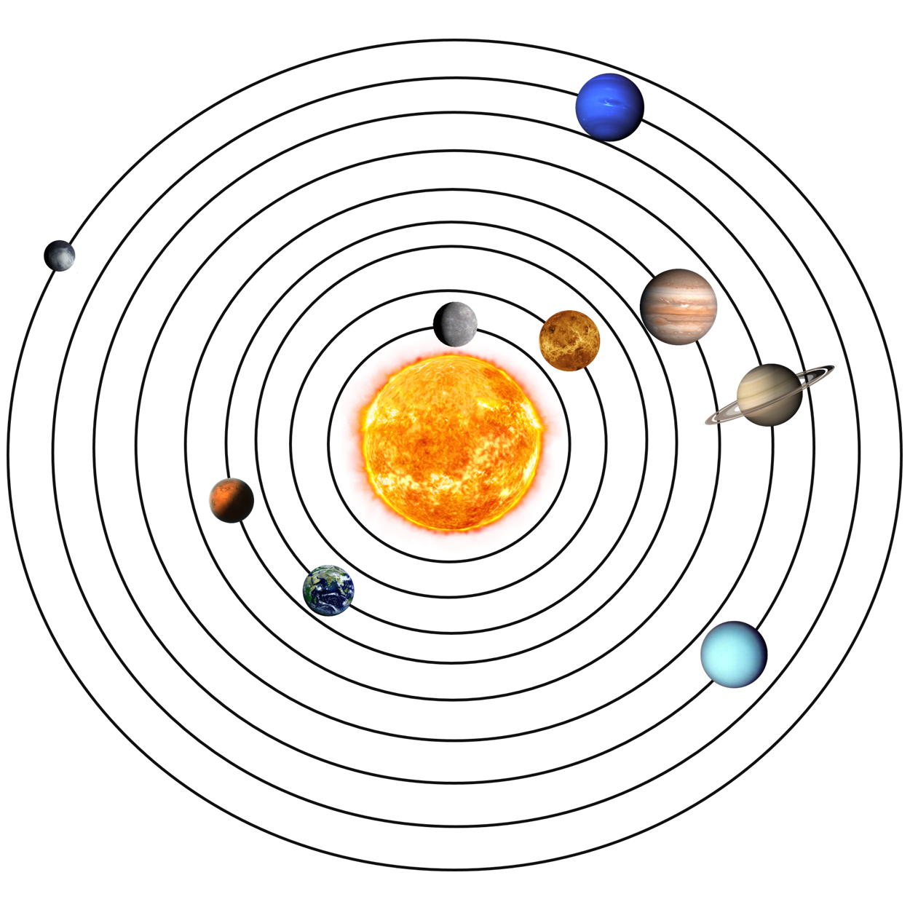

Das Sonnensystem

Merkur
- Durchmesser: 4.800km
- Masse: 3,285 × 10^23 kg
- Umlaufbahn: 87,969 Tage
- Dichte: 5,427 g/cm^3
- Atmosphäre: Sehr dünn, bestehend aus natürlichen Gasen wie Sauerstoff, Helium
- Temperatur: Extrem wechselhaft, von -173°C bis 427°C
- Umlaufbahn:3,7 m/s^2
- Anzahl der Monde: 0
- Entfernung zur Sonne: 57.9 Millionen km
Venus

- Durchmesser: 12.104 km
- Masse: 4,87 × 10^24 kg
- Umlaufbahn: 225 Tage
- Dichte:5,243 g/cm^3
- Atmosphäre: Dicht, bestehend aus CO2, N2 und Schwefelwolken
- Temperatur: Bis zu 462°C, die höchste im Sonnensystem
- Gravitation: 8,87 m/s^2
- Anzahl der Monde: 0
- Entfernung zur Sonne: 108 Millionen km
Erde

- Durchmessser: 12.742 km
- Masse: 5,97 × 10^24 kg
- Umlaufbahn: 365 Tage
- Dichte: 5,514 g/cm^3
- Atmosphäre: Kompliziert, bestehend aus Stickstoff, Sauerstoff, Argon
- Temperatur: -89°C bis 35°C
- Gravitation: 9,8 m/s^22
- Anzahl der Monde: 1
- Entfernung zur Sonne: 149,6 Millionen km
Mars

- Durchmesser: 6.794 km
- Masse: 6,39 × 10^23 kg
- Umlaufbahn: 687 Tage
- Dichte: 3,933 g/cm^3
- Atmosphäre: Dünn, bestehend aus CO2, Stickstoff, Argon
- Temperatur: -153°C bis 20°C
- Gravitation: 3,711 m/s^2
- Anzahl der Monde: 2
- Entfernung zur Sonne:227,9 Millionen km
Jupiter

- Durchmesser:139.822 km
- Masse:1,898 × 10^27 kg
- Umlaufbahn: 11,86 Jahre
- Dichte:1,326 g/cm^3
- Amtosphäre: Dick, bestehend aus Wasserstoff, Helium und anderen Gasen
- Temperatur:-145°C
- Gravitation: 24,79 m/s^2
- Anzahl der Monde: 79
- Entfernung zur Sonne: 778 Millionen km
Saturn

- Durchmesser: 116.460 km
- Masse: 5,68 × 10^26 kg
- Umlaufbahn: 29,46 Jahre
- Dichte: 0,687 g/cm^3
- Atmosphäre: Dick, bestehend aus Wasserstoff, Helium und anderen Gasen
- Temperatur: -139°C
- Gravitation: 10,44 m/s^2
- Anzahl der Monde: 82
- Entfernung zur Sonne: 1,4 Milliarden km
Uranus
- Durchmesser: 50.724 km
- Masse: 8,68 × 10^25 kg
- Umlaufbahn: 84 Jahre
- Dichte: 1,27 g/cm^3
- Atmosphäre: Dick, bestehend aus Wasserstoff, Helium, Methan und anderen Gasen
- Temperatur: -197°C
- Gravitation: 8,87 m/s^2
- Anzahl der Monde: 27
- Entfernung zur Sonne: 2,9 Milliarden km
Neptun
- Durchmesser: 49.244 km
- Masse: 1,02 × 10^26 kg
- Umlaufbahn: 164,79 Jahre
- Dichte: 1,64 g/cm^3
- Atmosphäre: Dick, bestehend aus Wasserstoff, Helium, Methan und anderen Gasen
- Temperatur: -201°C
- Gravitation: 11,15 m/s^2
- Anzahl der Monde: 14
- Entfernung zur Sonne: 4,5 Milliarden km
Planeten Erstellen
10 Fragen Quiz

- Welcher Planet im Sonnensystem hat die meisten Monde?
--> __ Saturn, mit 82 Monden
- Welcher ist der kälteste Planet?
--> __ Neptun
- Was ist der nächste Planet zu Sonne?
--> __ Merkur
- Aus was bestehen die Ringe beim Saturn?
--> __ Aus Eiskristallen, Steinen und Staubteilchen
- Welcher Planet wird auch "der Rote Planet" gennant
--> __ Der Mars
- Welche Planeten sind bekannt als die "Gasplaneten"?
--> __ Jupiter, Saturn, Uranus und Neptun
- Wie heißt das erste bemannte Raumschiff, das auf dem Mond gelandet ist?
--> __ Apollo 11
- Wie heißt der erste erfolgreiche Mars-Rover?
--> __ Soujourner
- Welcher Planet hat den größten Mond im Sonnensystem?
--> __ Jupiter (Ganymed)
- Was ist die Oortsche Wolke?
--> __ Ein großer Cloud aus Kometenkernen, die sich am Rand des Sonnensystems befindet